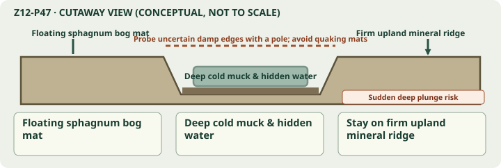

Z12-P47 · Extreme environments · New manuscript
Distinguish firm upland edges from quaking bogs, fens and deep marsh muck
Read wetland vegetation and soil cues to avoid sinking into concealed muck, floating bog mats and deep channels.
When it applies · Upper Midwest boreal bogs, marshes, beaver flowages, river deltas and coastal wetlands.
Equipment · Topographic map showing marsh symbols, sturdy pole to probe uncertain edges and dry spare socks.

Actions
- Recognize wetland warning terrain: flat carpets of bright sphagnum moss, sedge tussocks, stunted black spruce/tamarack and standing dark tea-colored water often form floating **quaking bog mats** over deep cold muck or open water underneath.[X12, X13, N02]
- Probe uncertain damp edges ahead with a sturdy walking pole BEFORE stepping—avoid jumping onto floating peat mats or cutting across grassy marsh openings that look like dry meadows on older maps.[X12, X13, N10]
- Route travel along firm elevated upland mineral ridges (pine/hardwood high ground), established boardwalks or verified bridges rather than wading through unmarked bog basins.[X12, N10, E22]
Failure recognition · Stepping onto a springy green sphagnum carpet assuming solid meadow and punching straight through to chest-deep freezing peat muck.[X12, X13]
Verify · Confirm firm mineral soil footing or official boardwalk surface before committing group weight near mapped marsh symbols.[X12, N02, ED]
Stop or change course · Bouncing quaking ground, knee-deep sucking mud or concealed water channels stop forward travel—retreat along your entry footprints to firm upland ground.[X12, X13, N10]
Evidence and editorial notes
- E22 · NPS · Leave No Trace Seven Principles (current web edition)
- Section: Principle 2 > Travel and Camp on Durable Surfaces · Conditions: Campsite selection and shelter setup on public lands
Support: Pitch shelters on established pads, rock, gravel, dry grass, or snow rather than fragile meadows or saturated shorelines; do not alter terrain or cut live vegetation for shelter frames.
Limitations: Deadfall shelter construction is inappropriate in high-use or protected zones except genuine life-safety emergencies. · Conflicting evidence: Restricts destructive improvised shelter building during routine trips.
Editorial note: Separates lawful low-impact practice from emergency improvised cover. · Specialist reviewer: Land management and wilderness ethics
Primary source · checked 2026-11-24 - N02 · USGS · Topographic Map Symbols (agency PDF)
- Section: Topographic Map Symbols > Contours, Water, Vegetation and Boundaries · Conditions: Interpreting standard USGS 1:24,000 and US Topo map sheets
Support: Contour spacing indicates slope steepness, index contours give elevation values, blue features mark water/wetlands and standard symbols distinguish roads, trails, cliffs and marshes.
Limitations: Small terrain hazards (boulders, undercut banks, fallen timber, thin ice) fall below map contour interval resolution. · Conflicting evidence: None; anchors terrain and contour interpretation cards.
Editorial note: Explains contour reading alongside map-resolution limitations. · Specialist reviewer: Cartography and search and rescue
Primary source · checked 2026-11-24 - N10 · NWS · Turn Around Don't Drown (current web edition)
- Section: Turn Around Don't Drown > Flooded Crossings and Terrain Detours · Conditions: Navigating around flooded streams, washes and submerged roads
Support: Water barriers and flooded crossings conceal washed-out banks, swift undercurrents and deep holes; detour along verified dry high-ground routes or hold in a safe elevated spot.
Limitations: Applies equally to foot and vehicle navigation. · Conflicting evidence: Aligns with B014-P12 and T07.
Editorial note: Connects navigation rerouting to flood and water-barrier boundaries. · Specialist reviewer: Search and rescue and emergency management
Primary source · checked 2026-11-24 - X12 · US EPA · What is a Wetland (current web edition)
- Section: What is a Wetland > Bogs, Fens, Swamps and Marshes · Conditions: Upper Midwest boreal bogs, marshes, beaver ponds and coastal wetlands
Support: Wetlands feature saturated hydric soils, floating vegetation mats (quaking bogs), hidden channels and fluctuating water tables that conceal deep muck, unstable footing and slow-draining floodwaters.
Limitations: Winter ice over bogs and wetlands is especially erratic due to decaying organic heat and seepage. · Conflicting evidence: Aligns with B014-P12 and NPS-WETLAND.
Editorial note: Core wetland terrain and quaking-bog hazard evidence in Z12. · Specialist reviewer: Wetland ecology and search and rescue
Primary source · checked 2026-11-24 - X13 · NPS · Wetlands Subject Guide (current web edition)
- Section: Wetlands > Footing, Immersion, Insects and Water Quality · Conditions: Travel near marshes, swamps, fens and slow-water estuaries
Support: Wetlands combine wet-cold immersion risk, concealed snags, unstable muck that drains energy rapidly, insect-borne disease exposure and high-organic/stagnant water requiring strict treatment or alternate sourcing.
Limitations: Footwear immersion and trench-foot/cold injury occur even in mild temperatures during prolonged wetland exposure. · Conflicting evidence: None; complements EPA-WETLAND and W16.
Editorial note: Grounds wetland navigation, foot-care and cold-wet exposure cards. · Specialist reviewer: Wilderness safety and wetland operations
Primary source · checked 2026-11-24
Source lineage · EPA wetlands and NPS wetlands; new manuscript · Classification · New manuscript.